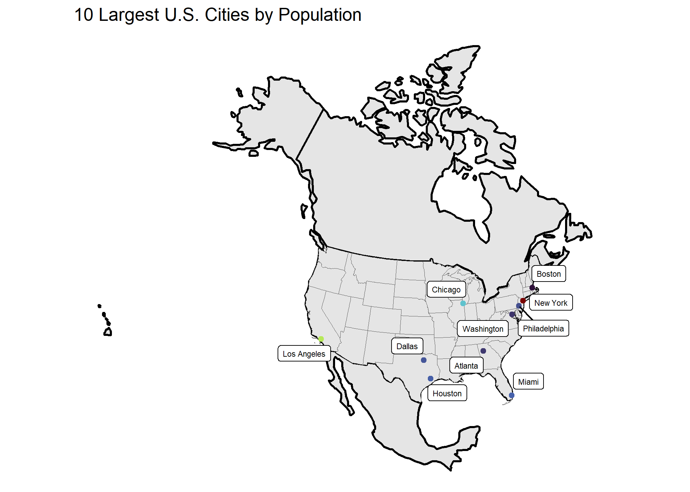
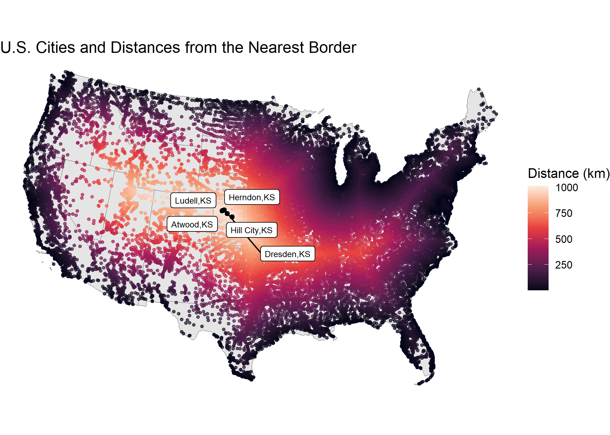

#Data Manipulation
library(tidyverse)
library(sf)
library(units)
library(flextable)
#Data Loading
library(USAboundaries)
library(rnaturalearth)
# Visualization
library(gghighlight)
library(ggrepel)
library(knitr)Lab 2: Distances and Projections
Ecosystem Science and Sustainability 523c
In this lab we will explore the properties of sf, sfc, and sfg features & objects; how they are stored; and issues related to distance calculation and coordinate transformation.
We will continue to build on our data wrangling and data visualization skills; as well as document preparation via Quarto and GitHub.
Libraries
Background
In this lab, 4 main skills are covered:
- Ingesting / building
sfobjects from R packages and CSVs. (Q1) - Manipulating geometries and coordinate systems (Q2)
- Calculating distances (Q2)
- Building maps using ggplot (Q3)
Hints and Tricks for this lab are available here
Question 1:
For this lab we need three (3) datasets.
- Spatial boundaries of continental USA states (1.1)
- Boundaries of Canada, Mexico and the United States (1.2)
- All USA cites (1.3)
1.1 Define a Projection
For this lab we want to calculate distances between features, therefore we need a projection that preserves distance at the scale of CONUS. For this, we will use the North America Equidistant Conic:
eqdc <- '+proj=eqdc +lat_0=40 +lon_0=-96 +lat_1=20 +lat_2=60 +x_0=0 +y_0=0 +datum=NAD83 +units=m +no_defs'This PROJ.4 string defines an Equidistant Conic projection with the following parameters:
+proj=eqdc → Equidistant Conic projection
+lat_0=40 → Latitude of the projection’s center (40°N)
+lon_0=-96 → Central meridian (96°W)
+lat_1=20 → First standard parallel (20°N)
+lat_2=60 → Second standard parallel (60°N)
+x_0=0 → False easting (0 meters)
+y_0=0 → False northing (0 meters)
+datum=NAD83 → Uses the North American Datum 1983 (NAD83)
+units=m → Units are in meters
+no_defs → No additional default parameters from PROJ’s database
This projection is commonly used for mapping large areas with an east-west extent, especially in North America, as it balances distortion well between the two standard parallels.
1.2 - Get USA state boundaries
In R, USA boundaries are stored in the USAboundaries package. In case this package and data are not installed:
library(remotes)
library(USAboundaries)
library(USAboundariesData)Once installed:
- USA state boundaries can be accessed with
USAboundaries::us_states(resolution = "low"). Given the precision needed for this analysis we are ok with the low resolution. - Make sure you only have the states in the continental United States (CONUS) (Hint use
filter) - Make sure the data is in a projected coordinate system suitable for distance measurements at the national scale (
eqdc).
state_boundary <- us_states(resolution = 'low') %>%
filter(!state_abbr %in% c('PR', 'HI', 'AK')) %>%
st_transform(eqdc)Coordinate Reference System:
User input: +proj=eqdc +lat_0=40 +lon_0=-96 +lat_1=20 +lat_2=60 +x_0=0 +y_0=0 +datum=NAD83 +units=m +no_defs
wkt:
PROJCRS["unknown",
BASEGEOGCRS["unknown",
DATUM["North American Datum 1983",
ELLIPSOID["GRS 1980",6378137,298.257222101,
LENGTHUNIT["metre",1]],
ID["EPSG",6269]],
PRIMEM["Greenwich",0,
ANGLEUNIT["degree",0.0174532925199433],
ID["EPSG",8901]]],
CONVERSION["unknown",
METHOD["Equidistant Conic",
ID["EPSG",1119]],
PARAMETER["Latitude of false origin",40,
ANGLEUNIT["degree",0.0174532925199433],
ID["EPSG",8821]],
PARAMETER["Longitude of false origin",-96,
ANGLEUNIT["degree",0.0174532925199433],
ID["EPSG",8822]],
PARAMETER["Latitude of 1st standard parallel",20,
ANGLEUNIT["degree",0.0174532925199433],
ID["EPSG",8823]],
PARAMETER["Latitude of 2nd standard parallel",60,
ANGLEUNIT["degree",0.0174532925199433],
ID["EPSG",8824]],
PARAMETER["Easting at false origin",0,
LENGTHUNIT["metre",1],
ID["EPSG",8826]],
PARAMETER["Northing at false origin",0,
LENGTHUNIT["metre",1],
ID["EPSG",8827]]],
CS[Cartesian,2],
AXIS["(E)",east,
ORDER[1],
LENGTHUNIT["metre",1,
ID["EPSG",9001]]],
AXIS["(N)",north,
ORDER[2],
LENGTHUNIT["metre",1,
ID["EPSG",9001]]]]
1.3 - Get country boundaries for Mexico, the United States of America, and Canada
In R, country boundaries are stored in the rnaturalearth package. - World boundaries can be accessed with rnaturalearth::countries110. - Make sure the data is in simple features (sf) format (Hint use the st_as_sf variable). - Make sure you only have the countries you want (Hint filter on the admin variable) - Make sure the data is in a projected coordinate system suitable for distance measurements at the national scale (eqdc).
rnaturalearth::countries110$ADMIN [1] "Fiji"
[2] "United Republic of Tanzania"
[3] "Western Sahara"
[4] "Canada"
[5] "United States of America"
[6] "Kazakhstan"
[7] "Uzbekistan"
[8] "Papua New Guinea"
[9] "Indonesia"
[10] "Argentina"
[11] "Chile"
[12] "Democratic Republic of the Congo"
[13] "Somalia"
[14] "Kenya"
[15] "Sudan"
[16] "Chad"
[17] "Haiti"
[18] "Dominican Republic"
[19] "Russia"
[20] "The Bahamas"
[21] "Falkland Islands"
[22] "Norway"
[23] "Greenland"
[24] "French Southern and Antarctic Lands"
[25] "East Timor"
[26] "South Africa"
[27] "Lesotho"
[28] "Mexico"
[29] "Uruguay"
[30] "Brazil"
[31] "Bolivia"
[32] "Peru"
[33] "Colombia"
[34] "Panama"
[35] "Costa Rica"
[36] "Nicaragua"
[37] "Honduras"
[38] "El Salvador"
[39] "Guatemala"
[40] "Belize"
[41] "Venezuela"
[42] "Guyana"
[43] "Suriname"
[44] "France"
[45] "Ecuador"
[46] "Puerto Rico"
[47] "Jamaica"
[48] "Cuba"
[49] "Zimbabwe"
[50] "Botswana"
[51] "Namibia"
[52] "Senegal"
[53] "Mali"
[54] "Mauritania"
[55] "Benin"
[56] "Niger"
[57] "Nigeria"
[58] "Cameroon"
[59] "Togo"
[60] "Ghana"
[61] "Ivory Coast"
[62] "Guinea"
[63] "Guinea-Bissau"
[64] "Liberia"
[65] "Sierra Leone"
[66] "Burkina Faso"
[67] "Central African Republic"
[68] "Republic of the Congo"
[69] "Gabon"
[70] "Equatorial Guinea"
[71] "Zambia"
[72] "Malawi"
[73] "Mozambique"
[74] "eSwatini"
[75] "Angola"
[76] "Burundi"
[77] "Israel"
[78] "Lebanon"
[79] "Madagascar"
[80] "Palestine"
[81] "Gambia"
[82] "Tunisia"
[83] "Algeria"
[84] "Jordan"
[85] "United Arab Emirates"
[86] "Qatar"
[87] "Kuwait"
[88] "Iraq"
[89] "Oman"
[90] "Vanuatu"
[91] "Cambodia"
[92] "Thailand"
[93] "Laos"
[94] "Myanmar"
[95] "Vietnam"
[96] "North Korea"
[97] "South Korea"
[98] "Mongolia"
[99] "India"
[100] "Bangladesh"
[101] "Bhutan"
[102] "Nepal"
[103] "Pakistan"
[104] "Afghanistan"
[105] "Tajikistan"
[106] "Kyrgyzstan"
[107] "Turkmenistan"
[108] "Iran"
[109] "Syria"
[110] "Armenia"
[111] "Sweden"
[112] "Belarus"
[113] "Ukraine"
[114] "Poland"
[115] "Austria"
[116] "Hungary"
[117] "Moldova"
[118] "Romania"
[119] "Lithuania"
[120] "Latvia"
[121] "Estonia"
[122] "Germany"
[123] "Bulgaria"
[124] "Greece"
[125] "Turkey"
[126] "Albania"
[127] "Croatia"
[128] "Switzerland"
[129] "Luxembourg"
[130] "Belgium"
[131] "Netherlands"
[132] "Portugal"
[133] "Spain"
[134] "Ireland"
[135] "New Caledonia"
[136] "Solomon Islands"
[137] "New Zealand"
[138] "Australia"
[139] "Sri Lanka"
[140] "China"
[141] "Taiwan"
[142] "Italy"
[143] "Denmark"
[144] "United Kingdom"
[145] "Iceland"
[146] "Azerbaijan"
[147] "Georgia"
[148] "Philippines"
[149] "Malaysia"
[150] "Brunei"
[151] "Slovenia"
[152] "Finland"
[153] "Slovakia"
[154] "Czechia"
[155] "Eritrea"
[156] "Japan"
[157] "Paraguay"
[158] "Yemen"
[159] "Saudi Arabia"
[160] "Antarctica"
[161] "Northern Cyprus"
[162] "Cyprus"
[163] "Morocco"
[164] "Egypt"
[165] "Libya"
[166] "Ethiopia"
[167] "Djibouti"
[168] "Somaliland"
[169] "Uganda"
[170] "Rwanda"
[171] "Bosnia and Herzegovina"
[172] "North Macedonia"
[173] "Republic of Serbia"
[174] "Montenegro"
[175] "Kosovo"
[176] "Trinidad and Tobago"
[177] "South Sudan" na_boundaries <- rnaturalearth::countries110 %>%
filter(ADMIN %in% c('United States of America', 'Canada', 'Mexico')) %>%
st_as_sf() %>%
st_transform(eqdc)Coordinate Reference System:
User input: +proj=eqdc +lat_0=40 +lon_0=-96 +lat_1=20 +lat_2=60 +x_0=0 +y_0=0 +datum=NAD83 +units=m +no_defs
wkt:
PROJCRS["unknown",
BASEGEOGCRS["unknown",
DATUM["North American Datum 1983",
ELLIPSOID["GRS 1980",6378137,298.257222101,
LENGTHUNIT["metre",1]],
ID["EPSG",6269]],
PRIMEM["Greenwich",0,
ANGLEUNIT["degree",0.0174532925199433],
ID["EPSG",8901]]],
CONVERSION["unknown",
METHOD["Equidistant Conic",
ID["EPSG",1119]],
PARAMETER["Latitude of false origin",40,
ANGLEUNIT["degree",0.0174532925199433],
ID["EPSG",8821]],
PARAMETER["Longitude of false origin",-96,
ANGLEUNIT["degree",0.0174532925199433],
ID["EPSG",8822]],
PARAMETER["Latitude of 1st standard parallel",20,
ANGLEUNIT["degree",0.0174532925199433],
ID["EPSG",8823]],
PARAMETER["Latitude of 2nd standard parallel",60,
ANGLEUNIT["degree",0.0174532925199433],
ID["EPSG",8824]],
PARAMETER["Easting at false origin",0,
LENGTHUNIT["metre",1],
ID["EPSG",8826]],
PARAMETER["Northing at false origin",0,
LENGTHUNIT["metre",1],
ID["EPSG",8827]]],
CS[Cartesian,2],
AXIS["(E)",east,
ORDER[1],
LENGTHUNIT["metre",1,
ID["EPSG",9001]]],
AXIS["(N)",north,
ORDER[2],
LENGTHUNIT["metre",1,
ID["EPSG",9001]]]]
1.4 - Get city locations from the CSV file
The process of finding, downloading and accessing data is the first step of every analysis. Here we will go through these steps (minus finding the data).
First go to this site and download the appropriate (free) dataset into the data directory of this project.
Once downloaded, read it into your working session using readr::read_csv() and explore the dataset until you are comfortable with the information it contains.
While this data has everything we want, it is not yet spatial. Convert the data.frame to a spatial object using st_as_sf and prescribing the coordinate variables and CRS (Hint what projection are the raw coordinates in?)
Finally, remove cities in states not wanted and make sure the data is in a projected coordinate system suitable for distance measurements at the national scale:
Congratulations! You now have three real-world, large datasets ready for analysis.
us_cities <- read_csv('data/uscities.csv') %>%
st_as_sf(coords = c('lng', 'lat'), crs = 4326) %>%
st_transform(eqdc) %>%
filter(!state_id %in% c('PR', 'HI', 'AK'))Coordinate Reference System:
User input: +proj=eqdc +lat_0=40 +lon_0=-96 +lat_1=20 +lat_2=60 +x_0=0 +y_0=0 +datum=NAD83 +units=m +no_defs
wkt:
PROJCRS["unknown",
BASEGEOGCRS["unknown",
DATUM["North American Datum 1983",
ELLIPSOID["GRS 1980",6378137,298.257222101,
LENGTHUNIT["metre",1]],
ID["EPSG",6269]],
PRIMEM["Greenwich",0,
ANGLEUNIT["degree",0.0174532925199433],
ID["EPSG",8901]]],
CONVERSION["unknown",
METHOD["Equidistant Conic",
ID["EPSG",1119]],
PARAMETER["Latitude of false origin",40,
ANGLEUNIT["degree",0.0174532925199433],
ID["EPSG",8821]],
PARAMETER["Longitude of false origin",-96,
ANGLEUNIT["degree",0.0174532925199433],
ID["EPSG",8822]],
PARAMETER["Latitude of 1st standard parallel",20,
ANGLEUNIT["degree",0.0174532925199433],
ID["EPSG",8823]],
PARAMETER["Latitude of 2nd standard parallel",60,
ANGLEUNIT["degree",0.0174532925199433],
ID["EPSG",8824]],
PARAMETER["Easting at false origin",0,
LENGTHUNIT["metre",1],
ID["EPSG",8826]],
PARAMETER["Northing at false origin",0,
LENGTHUNIT["metre",1],
ID["EPSG",8827]]],
CS[Cartesian,2],
AXIS["(E)",east,
ORDER[1],
LENGTHUNIT["metre",1,
ID["EPSG",9001]]],
AXIS["(N)",north,
ORDER[2],
LENGTHUNIT["metre",1,
ID["EPSG",9001]]]]
Question 2:
Here we will focus on calculating the distance of each USA city to (1) the national border (2) the nearest state border (3) the Mexican border and (4) the Canadian border. You will need to manipulate you existing spatial geometries to do this using either st_union or st_combine depending on the situation. In all cases, since we are after distances to borders, we will need to cast (st_cast) our MULTIPOLYGON geometries to MULTILINESTRING geometries. To perform these distance calculations we will use st_distance().
2.1 - Distance to USA Border (coastline or national) (km)
For 2.1 we are interested in calculating the distance of each USA city to the USA border (coastline or national border). To do this we need all states to act as single unit. Convert the USA state boundaries to a MULTILINESTRING geometry in which the state boundaries are resolved. Please do this starting with the states object and NOT with a filtered country object. In addition to storing this distance data as part of the cities data.frame, produce a table (flextable) documenting the five cities farthest from an international border. Include only the city name, state, and distance.
state_boundary_u <- state_boundary %>%
st_union() %>%
st_cast(to = 'MULTILINESTRING')
ggplot() +
geom_sf(data = state_boundary_u, aes()) +
theme_void()
us_cities_distance <- us_cities %>%
mutate(distance_usa = st_distance(us_cities, state_boundary_u)) %>%
mutate(distance_usa = units::set_units(distance_usa, km)) %>%
select(-c('city_ascii', 'source', 'military', 'incorporated', 'timezone', 'ranking', 'zips', 'id'))
slice_max(us_cities_distance, n = 5, order_by = distance_usa) %>%
select(city, state_name, distance_usa) %>%
flextable() %>%
set_caption("5 Cities Furthest from a Coastal or International Border")city | state_name | distance_usa | geometry |
|---|---|---|---|
Ludell | Kansas | 1,012.508 [km] | [[XY]] |
Dresden | Kansas | 1,012.398 [km] | [[XY]] |
Herndon | Kansas | 1,007.763 [km] | [[XY]] |
Hill City | Kansas | 1,005.140 [km] | [[XY]] |
Atwood | Kansas | 1,004.734 [km] | [[XY]] |
2.2 - Distance to States (km)
For 2.2 we are interested in calculating the distance of each city to the nearest state boundary. To do this we need all states to act as single unit. Convert the USA state boundaries to a MULTILINESTRING geometry in which the state boundaries are preserved (not resolved). In addition to storing this distance data as part of the cities data.frame, produce a table (flextable) documenting the five cities farthest from a state border. Include only the city name, state, and distance.
state_boundary_c <- state_boundary %>%
st_combine() %>%
st_cast(to = 'MULTILINESTRING')
ggplot() +
geom_sf(data = state_boundary_c, aes()) +
theme_void()
us_cities_distance <- us_cities_distance %>%
mutate(distance_state = st_distance(us_cities_distance, state_boundary_c)) %>%
mutate(distance_state = units::set_units(distance_state, km))
slice_max(us_cities_distance, n = 5, order_by = distance_state) %>%
select(city, state_name, distance_state) %>%
flextable() %>%
set_caption("5 Cities Furthest from a State Boundary")city | state_name | distance_state | geometry |
|---|---|---|---|
Briggs | Texas | 309.4150 [km] | [[XY]] |
Lampasas | Texas | 308.9216 [km] | [[XY]] |
Kempner | Texas | 302.5868 [km] | [[XY]] |
Bertram | Texas | 302.5776 [km] | [[XY]] |
Harker Heights | Texas | 298.8138 [km] | [[XY]] |
2.3 - Distance to Mexico (km)
For 2.3 we are interested in calculating the distance of each city to the Mexican border. To do this we need to isolate Mexico from the country objects. In addition to storing this data as part of the cities data.frame, produce a table (flextable) documenting the five cities farthest from the Mexico border. Include only the city name, state, and distance.
na_boundaries_mex <- na_boundaries %>%
filter(SOV_A3 == 'MEX') %>%
st_cast(to = 'MULTILINESTRING')
plot(na_boundaries_mex)
us_cities_distance <- us_cities_distance %>%
mutate(distance_mex = st_distance(us_cities_distance, na_boundaries_mex)) %>%
mutate(distance_mex = units::set_units(distance_mex, km))
slice_max(us_cities_distance, n = 5, order_by = distance_mex) %>%
select(city, state_name, distance_mex) %>%
flextable() %>%
set_caption("5 Cities Furthest from the Mexico Border")city | state_name | distance_mex | geometry |
|---|---|---|---|
Grand Isle | Maine | 3,282.825 [km] | [[XY]] |
Caribou | Maine | 3,250.330 [km] | [[XY]] |
Presque Isle | Maine | 3,234.570 [km] | [[XY]] |
Oakfield | Maine | 3,175.577 [km] | [[XY]] |
Island Falls | Maine | 3,162.285 [km] | [[XY]] |
2.4 - Distance to Canada (km)
For 2.4 we are interested in calculating the distance of each city to the Canadian border. To do this we need to isolate Canada from the country objects. In addition to storing this data as part of the cities data.frame, produce a table (flextable) documenting the five cities farthest from a state border. Include only the city name, state, and distance.
na_boundaries_can <- na_boundaries %>%
filter(SOV_A3 == 'CAN') %>%
st_cast(to = 'MULTILINESTRING')
plot(na_boundaries_can)
us_cities_distance <- us_cities_distance %>%
mutate(distance_can = st_distance(us_cities_distance, na_boundaries_can)) %>%
mutate(distance_can = units::set_units(distance_can, km))
slice_max(us_cities_distance, n = 5, order_by = distance_can) %>%
select(city, state_name, distance_can) %>%
flextable() %>%
set_caption("5 Cities Furthest from the Canada Border")city | state_name | distance_can | geometry |
|---|---|---|---|
Guadalupe Guerra | Texas | 2,206.455 [km] | [[XY]] |
Sandoval | Texas | 2,205.641 [km] | [[XY]] |
Fronton | Texas | 2,204.794 [km] | [[XY]] |
Fronton Ranchettes | Texas | 2,202.118 [km] | [[XY]] |
Evergreen | Texas | 2,202.020 [km] | [[XY]] |
Question 3:
In this section we will focus on visualizing the distance data you calculated above. You will be using ggplot to make your maps, ggrepl to label significant features, and gghighlight to emphasize important criteria.
3.1 Data
Show the 3 continents, CONUS outline, state boundaries, and 10 largest USA cities (by population) on a single map
- Use
geom_sfto plot your layers - Use
ltyto change the line type and size to change line width - Use
ggrepel::geom_label_repelto label your cities
us_cities_size <- us_cities_distance %>%
slice_max(n = 10, order_by = population)
ggplot() +
geom_sf(data = na_boundaries, linewidth = 0.75, color = 'black') +
geom_sf(data = state_boundary) +
geom_sf(data = us_cities_size, aes(color = population)) +
scale_color_viridis_c(option = 'turbo') +
geom_label_repel(data = us_cities_size,
aes(x = st_coordinates(geometry)[,1],
y = st_coordinates(geometry)[,2],
label = city),
size = 2) +
theme_void() +
theme(legend.position = 'none') +
labs(title = "10 Largest U.S. Cities by Population")
3.2 City Distance from the Border
Create a map that colors USA cities by their distance from the national border. In addition, re-draw and label the 5 cities that are farthest from the border.
us_cities_distance <- us_cities_distance %>%
mutate(distance_usa = as.numeric(distance_usa),
distance_state = as.numeric(distance_state),
distance_mex = as.numeric(distance_mex),
distance_can = as.numeric(distance_can))
us_cities_far <- us_cities_distance %>%
slice_max(n = 5, order_by = distance_usa) %>%
mutate(label = paste(city, state_id, sep = ','))
ggplot() +
geom_sf(data = state_boundary) +
geom_sf(data = us_cities_distance, aes(color = distance_usa), alpha = 0.7, size = 1) +
scale_color_viridis_c(option = 'rocket', name = 'Distance (km)') +
theme_void() +
labs(title = 'U.S. Cities and Distances from the Nearest Border') +
geom_sf(data = us_cities_far, color = 'black') +
geom_label_repel(data = us_cities_far,
aes(x = st_coordinates(geometry)[,1],
y = st_coordinates(geometry)[,2],
label = label),
size = 2.5)
3.3 City Distance from Nearest State
Create a map that colors USA cities by their distance from the nearest state border. In addition, re-draw and label the 5 cities that are farthest from any border.
us_cities_st_far <- us_cities_distance %>%
slice_max(n = 5, order_by = distance_state) %>%
mutate(label = paste(city, state_id, sep = ','))
state_boundary_line <- state_boundary %>%
st_cast(to = 'MULTILINESTRING')
ggplot() +
geom_sf(data = us_cities_distance, aes(color = distance_state), alpha = 0.7, size = 1) +
scale_color_viridis_c(option = 'rocket', name = 'Distance (km)') +
theme_void() +
geom_sf(data = state_boundary_line, color = 'black', alpha = 0.8) +
labs(title = 'U.S. Cities and Distances from the Nearest State Border') +
geom_sf(data = us_cities_st_far, color = 'black') +
geom_label_repel(data = us_cities_st_far,
aes(x = st_coordinates(geometry)[,1],
y = st_coordinates(geometry)[,2],
label = label),
size = 2.5)3.4 Equidistance boundary from Mexico and Canada
Here we provide a little more challenge. Use gghighlight to identify the cities that are equal distance from the Canadian AND Mexican border \(\pm\) 100 km.
In addition, label the five (5) most populous cites in this zone.
us_cities_eqd <- us_cities_distance %>%
mutate(equidistant = abs(distance_mex - distance_can))
us_cities_eqd_pop <- us_cities_eqd %>%
filter(equidistant <= 100) %>%
slice_max(n = 5, order_by = population) %>%
mutate(label = paste(city, state_id, sep = ','))
ggplot() +
geom_sf(data = us_cities_eqd, aes(color = equidistant), alpha = 0.7, size = 1) +
scale_color_viridis_c(option = 'rocket', name = 'Distance (km)') +
gghighlight(equidistant <= 100) +
theme_void() +
geom_sf(data = state_boundary_line, color = 'black', alpha = 0.8) +
labs(title = 'U.S. Cities Equidistant from Canada and Mexico +/- 100 km') +
geom_label_repel(data = us_cities_eqd_pop,
aes(x = st_coordinates(geometry)[,1],
y = st_coordinates(geometry)[,2],
label = label),
size = 2.5)
Hint: (create a new variable that finds the absolute difference between the distance to Mexico and the distance to Canada)
Question 4:
Real World Application
Recently, Federal Agencies have claimed basic constitutional rights protected by the Fourth Amendment (protecting Americans from random and arbitrary stops and searches) do not apply fully at our borders (see Portland). For example, federal authorities do not need a warrant or suspicion of wrongdoing to justify conducting what courts have called a “routine search,” such as searching luggage or a vehicle. Specifically, federal regulations give U.S. Customs and Border Protection (CBP) authority to operate within 100 miles of any U.S. “external boundary”. Further information can be found at this ACLU article.
4.1 Quantifing Border Zone
- How many cities are in this 100 mile zone? (100 miles ~ 160 kilometers)
- How many people live in a city within 100 miles of the border?
- What percentage of the total population is in this zone?
- Does it match the ACLU estimate in the link above?
us_cities_distance_border <- us_cities_distance %>%
filter(distance_usa <= 161)
n_cities <- as.numeric(nrow(us_cities_distance_border))
danger_pop <- sum(us_cities_distance_border$population)
total_pop <- sum(us_cities_distance$population)
percent_pop <- danger_pop/total_pop*100
Q_table <- tibble(
'Total Cities' = n_cities,
'Population within 100 miles' = danger_pop,
'Total U.S. Population' = total_pop,
'% in Danger Zone' = percent_pop,
'ACLU Estimate %' = '66.67')
flextable(Q_table) %>%
set_caption('Data for Cities within 100 miles of a US Border') %>%
add_footer_lines('ACLU Estimate and calculated % from the lab data are within 2%. The ACLU used 2010 census data and the more current data matches that.')Total Cities | Population within 100 miles | Total U.S. Population | % in Danger Zone | ACLU Estimate % |
|---|---|---|---|---|
13,220 | 257,834,521 | 396,228,558 | 65.07217 | 66.67 |
ACLU Estimate and calculated % from the lab data are within 2%. The ACLU used 2010 census data and the more current data matches that. | ||||
Report this information as a table.
4.2 Mapping Border Zone
- Make a map highlighting the cites within the 100 mile zone using
gghighlight. - Use a color gradient from ‘orange’ to ‘darkred’.
- Label the 10 most populous cities in the Danger Zone
ten_pop <- us_cities_distance_border %>%
slice_max(n = 10, order_by = population)
ggplot() +
geom_sf(data = us_cities_distance, color = 'black', alpha = 0.7, size = 0.5) +
geom_sf(data = us_cities_distance_border, aes(color = distance_usa)) +
scale_color_gradient(low = 'orange', high = 'darkred', name = 'Distance (km)') +
gghighlight(distance_usa <= 161) +
theme_void() +
geom_sf(data = state_boundary_line, color = 'black', alpha = 0.8) +
labs(title = 'U.S. Cities within 100 miles (160 km) of the Border') +
geom_label_repel(data = ten_pop,
aes(x = st_coordinates(geometry)[,1],
y = st_coordinates(geometry)[,2],
label = city),
size = 2.5)4.3 : Instead of labeling the 10 most populous cites, label the most populous city in each state within the Danger Zone.
state_pop <- us_cities_distance_border %>%
group_by(state_name) %>%
filter(population == max(population)) %>%
ungroup()
ggplot() +
geom_sf(data = us_cities_distance, color = 'black', alpha = 0.7, size = 0.5) +
geom_sf(data = us_cities_distance_border, aes(color = distance_usa)) +
scale_color_gradient(low = 'orange', high = 'darkred', name = 'Distance (km)') +
gghighlight(distance_usa <= 161) +
theme_void() +
geom_sf(data = state_boundary_line, color = 'black', alpha = 0.8) +
labs(title = 'U.S. Cities within 100 miles (160 km) of the Border') +
geom_label_repel(data = state_pop,
max.overlaps = getOption('ggrepel.max.overlaps', default = 30),
aes(x = st_coordinates(geometry)[,1],
y = st_coordinates(geometry)[,2],
label = city),
size = 2.5)
Rubric
Total: 150 points
Submission
For this lab you will submit a URL to a webpage deployed with GitHub pages.
To do this:
- Render your lab document
- Stage/commit/push your files
- If you followed the naming conventions in the “Set Up”, your lab 2 link will be available at:
`https://USERNAME.github.io/csu-523c/lab-02.html``
Submit this URL in the appropriate Canvas dropbox. Also take a moment to update your personal webpage with this link and some bullet points of what you learned. While not graded as part of this lab, it will be your final!